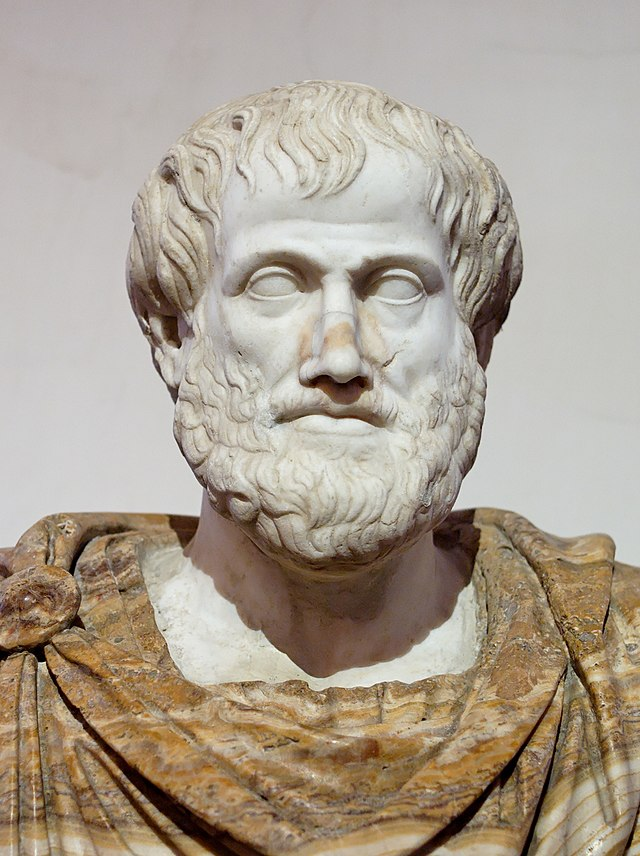

Voltar para Pagina Principal
Voltar para Pagina PrincipalAristóteles nasceu em torno de 384 a.C. na pequena cidade de Estagira ao norte da Grécia. Seu pai, Nicômaco, era médico do rei da Macedônia. Este vínculo com a corte macedônia influenciou Aristóteles por toda sua vida. Acredita-se que sua mãe também morreu quando ele era ainda muito novo.
Segundo o pensamento aristotélico, a felicidade (eudaimonia) é o único objetivo do homem. E se para ser feliz, é preciso fazer o bem a outrem, então o homem é um ser social e, mais precisamente, um ser político. Com efeito, cabe ao Estado “garantir o bem-estar e a felicidade dos seus governados”.
Aristóteles foi um dos principais filósofos gregos. Escreveu uma série de obras sobre filosofia, política, ética, metafísica e lógica. Sistematizou os conhecimentos que influenciam toda a cultura ocidental, criou conceitos inéditos e abriu uma nova escola filosófica.
Esse processo de dedução lógica foi inventado por Aristóteles e talvez esteja no centro de todas as suas realizações famosas. Ele foi a primeira pessoa a apresentar um procedimento autêntico e lógico para concluir uma declaração baseada nas proposições que estavam à mão.
O fim de Aristóteles foi trágico. Quando o rei da Macedônia, Alexandre, o Grande morreu, irrompeu em Atenas uma grande explosão de ódio, não somente contra o conquistador, mas contra todos os seus admiradores e amigos. Um dos melhores amigos de Alexandre era Aristóteles. Estava prestes a ser preso, quando conseguiu escapar em tempo. Deixou Atenas dizendo que não daria à cidade oportunidade de cometer um segundo crime contra a filosofia, referindo-se a Sócrates. Pouco tempo depois do exílio que se impusera, adoeceu. Desiludido com a ingratidão dos atenienses decidiu por fim à vida bebendo, como Sócrates, uma taça de cicuta.
Voltar para Pagina Principal